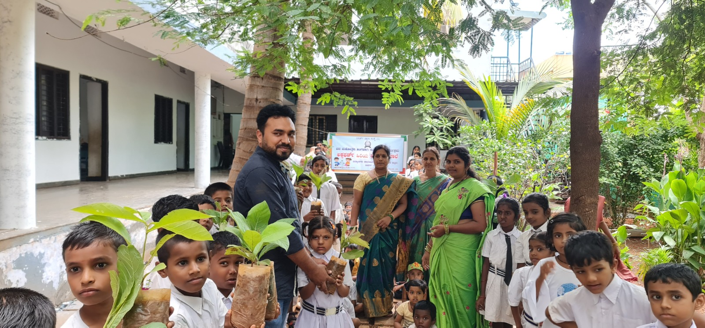
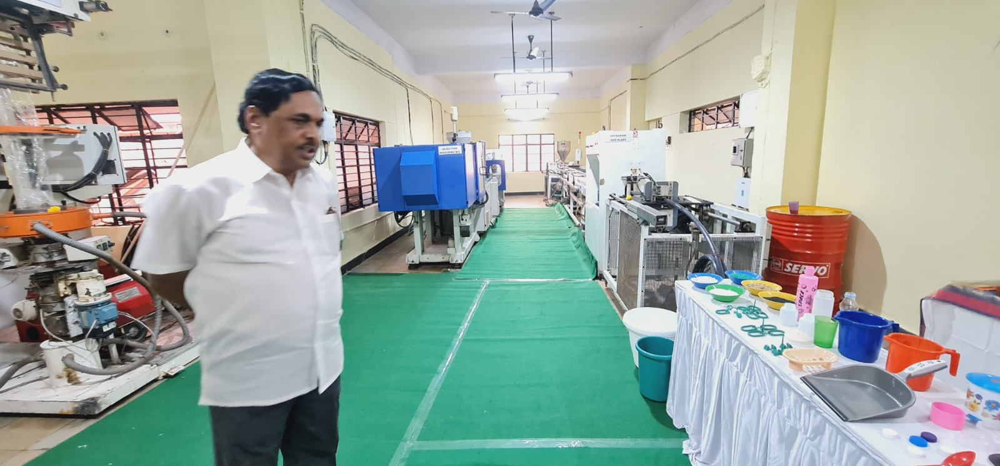
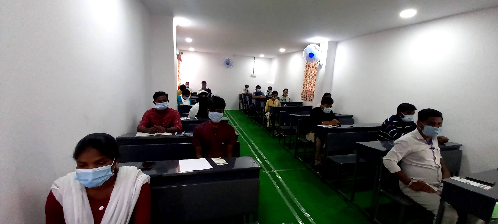
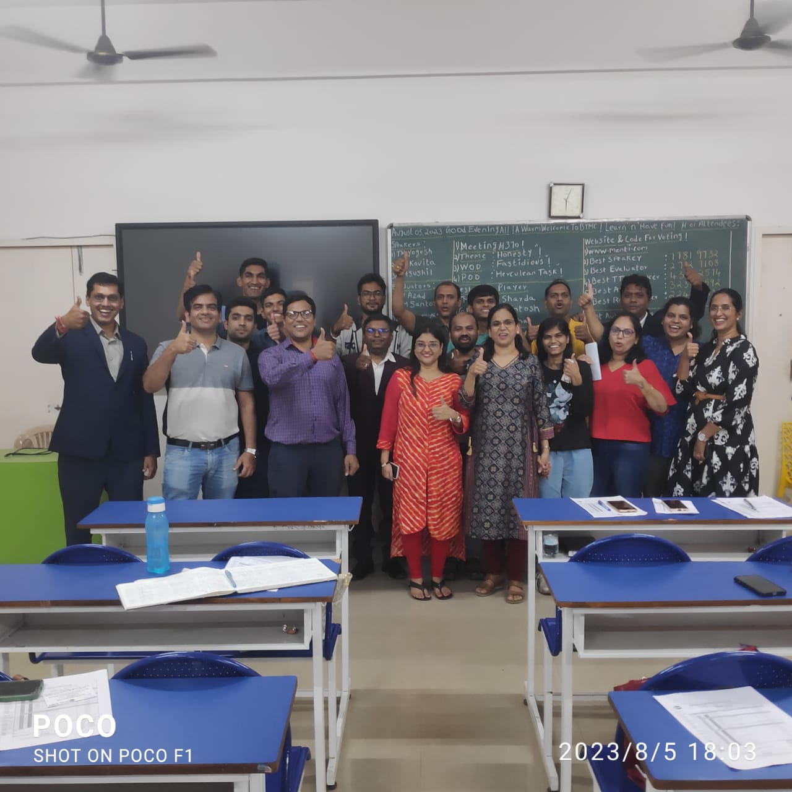
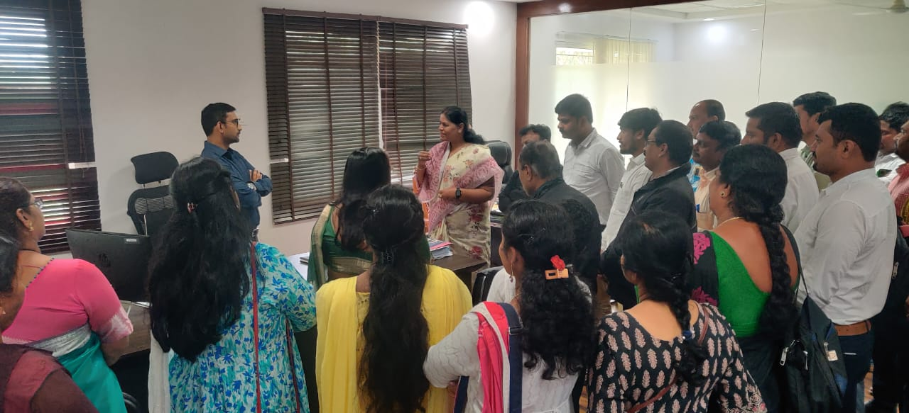

The objective of Corporate Social Responsibility (CSR) is to ensure that organizations operate in an ethical and responsible manner while contributing to the social, economic, and environmental development of society. CSR aims to improve the quality of life of communities by supporting initiatives in education, skill development, healthcare, environmental sustainability, and women empowerment. It encourages businesses to create positive social impact, promote inclusive growth, and support underprivileged sections of society. Through responsible practices and community-focused programs, CSR helps organizations contribute to sustainable development, strengthen social welfare, and build a better and more self-reliant nation.




